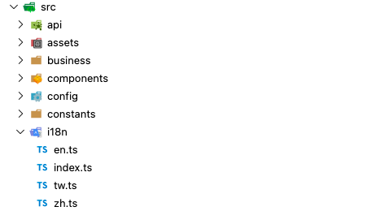

插件介绍
介绍：Vuei18n 是 Vue.js 的国际化插件。它可以轻松地将一些本地化功能集成到你的 Vue.js 应用程序中。
安装：npm install vue-i18n 或者 yarn add vue-i18n
项目使用
在项目目录下面创建一个文件夹(随便叫啥名都行)，这个文件夹主要用于处理i18n模块，做两件事情。
第一件事情是需要根据vue-i18n模块来导出一个i18n的实例对象，以供项目中能够直接使用。
第二件事情是需要提供具体的多语言支持文件，比如支持中文、中文繁体和英文，那么就需要提供特定字段的三种语言版本，以供按实际语言来进行显示。下面给出文件目录结构。

1
2
3
4
5
6
7
8
9
10
11
12
13
14
15
16
17
18
19
20
21
22
23
24
25
26
27
28
29
|
import { createI18n } from 'vue-i18n';
import zh from './zh';
import en from './en';
import tw from './tw';
let language = navigator.language;
console.log('📒 日志：language = ', language);
if (!['zh-TW', 'en-US', 'zh-CN'].includes(language)) {
language = 'zh-CN';
}
console.log('📒 日志：多语言处理，当前语言环境为 = ', language);
const i18n = createI18n({
locale: language,
messages: {
'zh-CN': zh,
'en-US': en,
'zh-TW': tw
}
});
export default i18n;
|
语言包其实就是就是需要多语言处理的字典，比如 我们有一个按钮，在不同的语言环境中需要分别被处理为：close、关闭、關閉，只需要在不同的语言包中写好对应的字典并在模块中返回，下面给出简单的对应关系。
1
2
3
4
5
6
7
8
9
10
11
12
13
14
15
16
17
18
19
20
21
22
23
24
25
26
27
28
29
30
31
32
33
34
|
const tw = {
message: {
close: '關閉',
search: '搜索',
noFiles: '暫無文件'
}
};
export default tw;
const zh = {
message: {
close: '关闭',
search: '搜索',
noFiles: '暂无文件'
}
};
export default zh;
const en = {
message: {
close: 'Close',
search: 'Search',
noFiles: 'No files'
}
};
export default en;
|
使用场景
项目中大概有两种场景，一种是在DOM节点中，一种是在JS的代码中。
如果是DOM节点中使用，那么可以直接通过$t(‘message.xxx’)的方式来使用。
1
2
3
4
5
| <!-- 01 节点的内容 -->
<div class="text">{{ $t('message.noFiles') }}</div>
<!-- 02 节点的属性 -->
<InsertPanel :action="action === 'save' ? $t('message.save') : $t('message.insert')"/>
|
如果是在JS中使用，那么可以通过之前在src/i18n/index.ts中导出的实例对象来获取。
1
2
3
4
5
|
import i18n from '../i18n';
let close = i18n.global.t('message.close');
|
参数处理
在处理字典的时候，可能有的字典中存在一些变量，比如我在Vue的节点中需要显示的内容为：当前选择20项，在进行多语言处理前，大概写法如下：
1
| <div> 当前选择 {{ count }} 项 </div>
|
如果我们在语言包(以zh为例)中对应的字段为: selectCout，那么可以写成下面格式
1
2
3
4
5
6
7
8
9
10
|
const zh = {
message: {
itemSelected: '当前选择{count}项'
}
};
export default zh;
<div> {{ $t('message.itemSelected',count:selectCount)}} </div>
|

- Posted by 博客园·文顶顶 | 花田半亩
- 原创文章，版权声明：自由转载-非商用-非衍生-保持署名 | 文顶顶